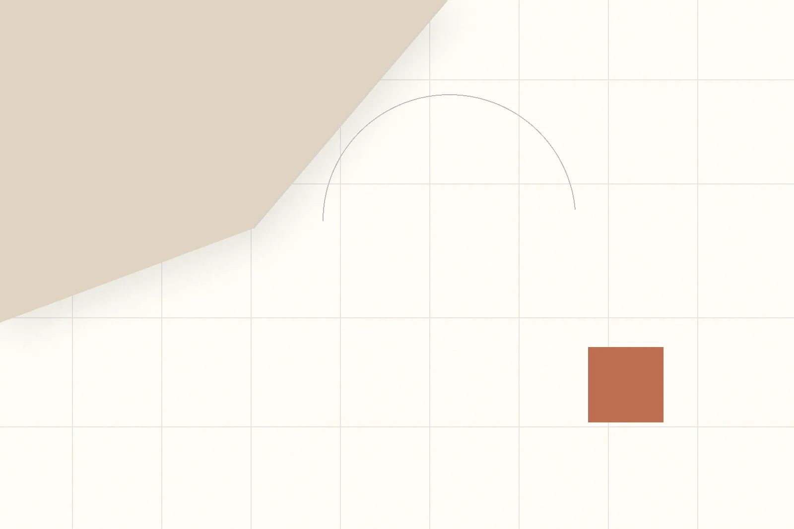

StudioOS
A calm project workspace for small creative teams. I designed the system around one question: how can a team see what needs attention without losing the project context behind the task?

Context, scope and role
StudioOS is a self-initiated SaaS workspace concept for small creative teams managing projects, tasks, feedback and delivery. The live product uses a fixed studio rail, a task-focused overview and project surfaces designed to keep operational detail readable.
My contribution
Product framing, UI/UX direction, information architecture, interaction design and front-end implementation.
Design scope
Overview, projects, tasks, calendar, notes, insights, settings, task states and responsive behavior.
Primary constraint
Make a project-management system feel focused and calm without hiding deadlines, feedback or work status.
Success criteria
A team member should know what needs attention, where the work belongs and what action is available next.
The design challenge
Creative teams often move between a high-level project view and very specific task decisions. A generic dashboard can show too much at once; a minimal task list can remove the context needed to make a good decision. StudioOS treats clarity as a system problem, not just a spacing problem.
From signal to decision
01 / Studio rail
The persistent dark rail creates orientation across Overview, Projects, Tasks, Calendar, Notes and Insights without competing with the work surface.
02 / Today as focus
The Overview brings active projects, today’s attention and recent activity into one narrative so the user can move from signal to action without opening every project.
03 / Context beside task
The Tasks page pairs task copy with project context, priority and due information. Reordering is available through drag-and-drop and keyboard fallback rather than a hidden menu.
04 / Quiet feedback loop
Toast feedback, undo behavior, review states and reduced-motion support make system responses visible without turning routine project work into a spectacle.
The interaction system
StudioOS is designed as a set of connected decisions rather than isolated screens. The system currently includes a shared icon language, semantic color tokens, editorial typography, responsive sidebar behavior, task persistence and accessible focus states.
- Native drag-and-drop reorder is paired with ArrowUp and ArrowDown keyboard movement.
- Task order persists locally so the user’s arrangement survives a refresh.
- Completion feedback uses a toast with an undo path instead of a silent state change.
- Reduced-motion preferences are respected across page transitions and micro-interactions.
What the design enables
The implemented workspace makes the next action visible without flattening the project context around it. A creative team can move from a project pulse to a task, reorder work, scan review status and return to the wider system through one consistent visual language.
What remains unverified: no team interviews, usability-test recordings, adoption data or delivery metrics were supplied. The next validation would observe a real creative-team member completing three flows: find an at-risk task, move it in priority order and locate the related project context.
Reflection and next iteration
StudioOS became stronger when the interface stopped treating “calm” as an aesthetic layer and started treating it as a product behavior: clear hierarchy, restrained motion, reversible actions and context that arrives before the user has to search for it. The next iteration would deepen collaboration signals and test whether the Insights page turns activity into a decision rather than another dashboard to monitor.